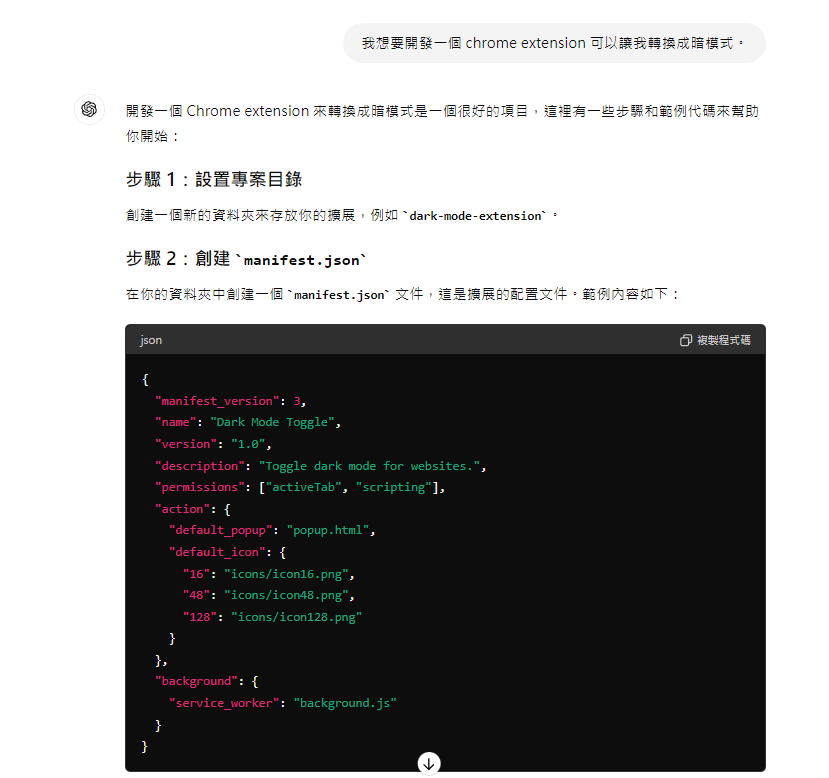
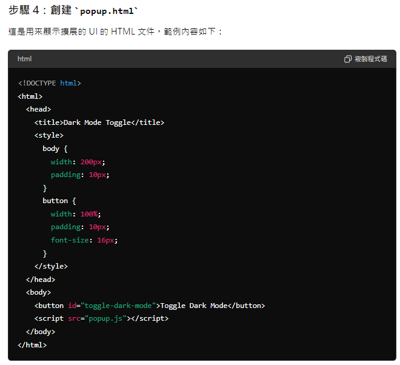
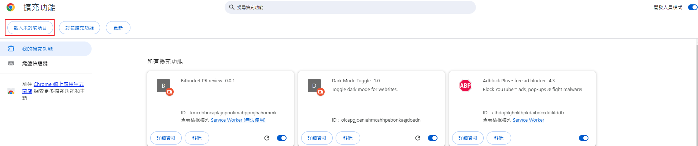

Chrome Extension
Chrome Extension，有人稱瀏覽器插件、擴充功能，而我們也常常使用，最常使用的可能是 ad-block 吧，而其實還有很多的應用，甚至能夠自己開發，而這邊也先介紹一下我自己常使用的擴充功能
Chrome Extension 如何開發
使用的技術:要開發 Chrome extension 所需的技術，只要你是個前端工程師，一定不會陌生，要使用的基本技術與網頁開發完全相同，就是 HTML、CSS、JavaScript。
接下來就來講如何做開發
extension 所含的主要有
恩…就這樣
當然要達到一些功能就要注入程式碼至網頁中，待會也會介紹
那首先我們先詢問 openAI 得到初步的程式碼 
現在必須使用 V3 的版本，所以在第一個 version 要使用 3
name description 主要在描述你的 extension 名稱跟詳細功能。
icons 代表你在 google 商店或是 extension 介面的縮小圖，我們就先不放入。
action 代表在瀏覽器上面點選插件的時候要彈出的 html 檔案，可以看到裡面就是放入 popup 檔案。
permissions 表示插件能動用到哪些權限。
background 就先不用。
建立 manifest.json
{
"manifest_version": 3,
"name": "Dark Mode Toggle",
"version": "1.0",
"description": "Toggle dark mode for websites.",
"permissions": ["activeTab", "scripting"],
"action": {
"default_popup": "popup.html"
}
}

建立 popup.html
<!DOCTYPE html>
<html>
<head>
<title>Dark Mode Toggle</title>
<style>
body {
width: 200px;
padding: 10px;
}
button {
width: 100%;
padding: 10px;
font-size: 16px;
}
</style>
</head>
<body>
<button id="toggle-dark-mode">Toggle Dark Mode</button>
<script src="popup.js"></script>
</body>
</html>
創建 popup.js
document
.getElementById("toggle-dark-mode")
.addEventListener("click", async () => {
let [tab] = await chrome.tabs.query({ active: true, currentWindow: true });
chrome.scripting.executeScript({
target: { tabId: tab.id },
function: toggleDarkMode,
});
});
function toggleDarkMode() {
if (
document.documentElement.style.filter === "invert(1) hue-rotate(180deg)"
) {
document.documentElement.style.filter = "";
} else {
document.documentElement.style.filter = "invert(1) hue-rotate(180deg)";
}
}
接著我們到 chrome://extensions/ 載入我們的資料夾就可以了。 
就可以到其他網站使用該功能，將顏色轉換為暗模式，這個我們平常看到的深色模式可能有點不同，因為那還有再另外處理過，而這個只是簡單的將色調轉換，所以可能看起來較奇怪。
chrome extension 還可以用在許多的地方，也有更進階的應用，上面有看到的 background.js，還有可以注入程式碼到網頁之中，達成更多不一樣的效果。
參考連結：
簡單來做一個 chrome extension : 這是使用 V2 的方法，需要更改一下
從頭開始學習開發 Chrome extension （v3 版本）